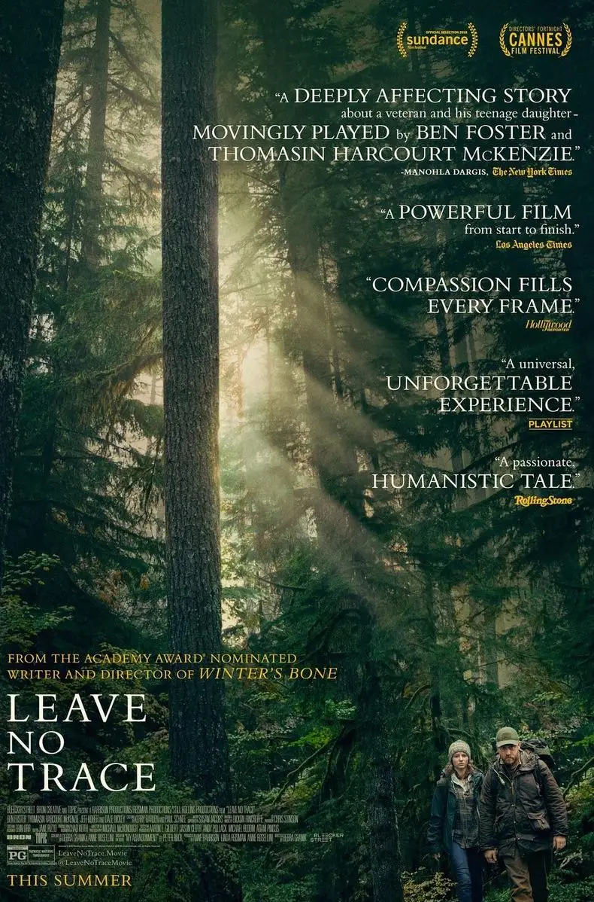
越长大，认识的人会越多，经历的事也会越多。
我们会收获很多欢乐和感动。
同样，伤害和阴影也会越深。
最终，我们会与身边的人渐行渐远，成为孤独一人。
难有悲伤，也没有爱的感觉，肩上扛满了忧伤。
威尔就是这样的人，他是伊拉克战争退休老兵，患有创伤后应激障碍（简称PTSD，又称创伤后遗症）
在战场上亲眼目睹了很多人间惨剧后，威尔性格大变、情感解离、麻木，他总是容易失眠、做噩梦，对身边的世界过度警觉、失忆和易受惊吓。
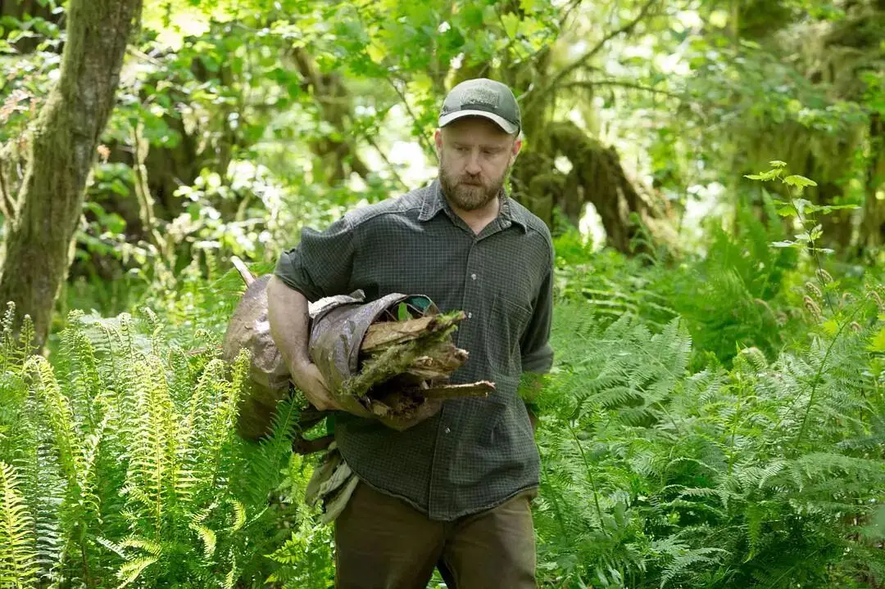
威尔无法走近这个熟悉又陌生的世界，世界也走不近他的内心。
于是，他出逃了。
带着13岁的女儿汤姆潜入国家森林公园，彻底告别了人类世界。
他们饮露水解渴，以鸟语花香为伴，成为了重返“原始”的现代人。
威尔不仅以极强的野外生存能力把女儿照顾得很好，同时还教会了她很多知识。
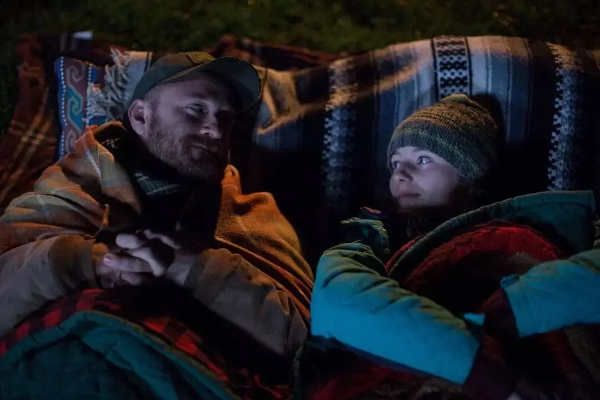
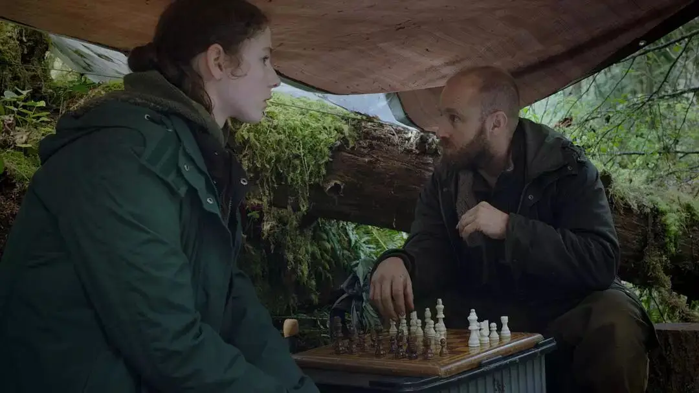
这一切像一个令人心醉的梦境，怪异又美好。
梦醒时，总是那样苍凉，那样让人怅然若失。
因为女儿不小心暴露了行踪，他们被警察发现了，他们在森林的家也被人端了。
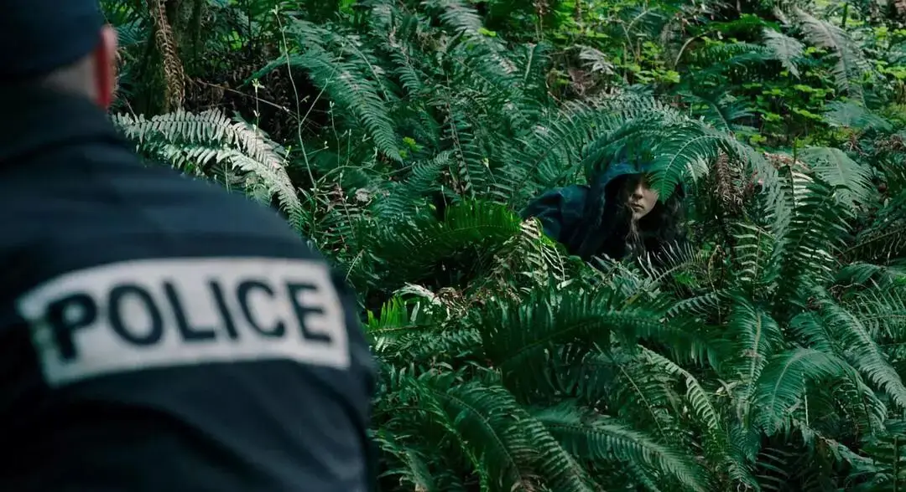
主流世界试着用科学理论去分析着他们的怪异行为，想方设法要将他们重新拉回到正常轨道中。
对于威尔而言这是一场噩梦，但对于女儿来说，这是一场认知上的碰撞和重新思考。
他们将何去何从......
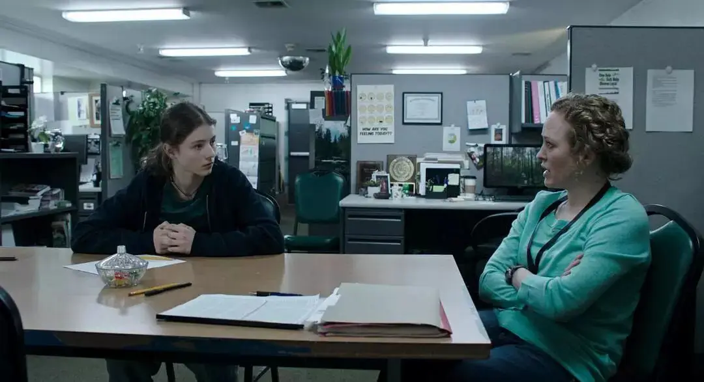
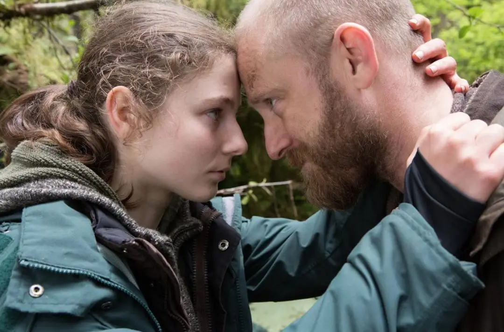
这是美国女性导演黛布拉·格兰克的新作《不留痕迹》。
这是一部很养眼、很有灵气的作品，在今年的圣丹斯电影节上大受好评，在烂番茄上更是收获100%新鲜度。
电影的故事性并不强，大多数场景只是父女两人穿行在绿葱葱的森林中，故事中虽有波折，但并没有非常强的戏剧性和高低起伏。
甚至，威尔此前到底经历过什么，导演始终没有直接呈现。
总之，导演在用一种极低调、中性的方式讲了一个骇人听闻的故事。
如果抛开电影的表现方式直接看这个故事，这是一个非常惹人争议的故事。
多半人会看这个父亲是个变态，他没有权力剥夺女儿的教育权带着她生活在森林里，他不应该未经同意就拿走女儿其他的选择。
就算积极一点看这个父亲的做法，这种不切实际的乌托邦行为也显得非常脆弱、不切实际。
但是当导演以一种近乎纪录片式的方式将父亲和女儿呈现出来时，看着父亲那忧郁的眼神，看着女儿那天使般的面孔，我们会很自然地将审判官的姿态放下。
我们应该先了解他们，我们应该先跟着他们一起沐浴在大自然中，我们应该设身处地地思考他们的处境。
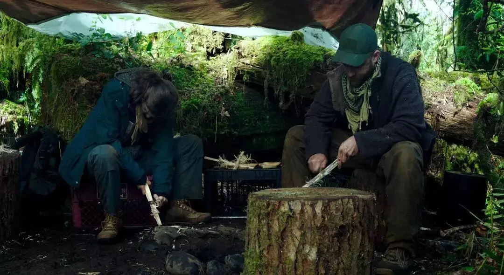
当我们真的走进他们的世界时。
我们看到了一个陷在精神疾病中却依旧竭尽全力照顾女儿的父亲。
我们看到了一个懵懂好奇、深深理解并爱着父亲的女儿。
我们看到了一种迥异于车水马龙、灯红酒绿的生活和风景。
电影给了我们观照，给了我们共鸣，同时也因着这些情感将一种复杂的伦理困境留给了我们。
我们希望女儿有自己的选择，但也不希望看到相依为命的父女分别。
当然这种困境同时也是留给威尔和女儿的，他们才是真正的局中人。
对于威尔，他对女儿的爱可以让他自私到剥夺女儿的选择么。
对于女儿，她对父亲的爱可以让父亲独自一人置身于茂密的森林中么。
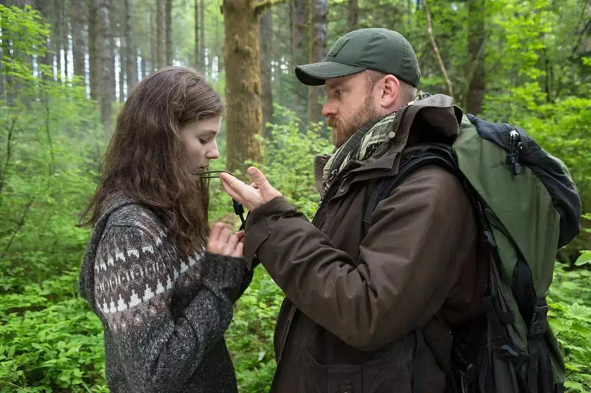
导演没有用很强的戏剧性来有意引导观众的抉择，而是保持中性将思考留给了观众，所以这部电影看起来很耐人寻味。
电影对于父女之情的刻画也并不是惊天地泣鬼神，而是在平淡中见深情，在演员的表情和眼睛里藏着人物复杂的内心世界，在绿葱葱的森林里隐藏着毫无痕迹的凝望。
电影的结尾虽然很让人心碎，但也非常有力量。
不论在哪里，威尔和女儿都可以一起分享同一片星空。
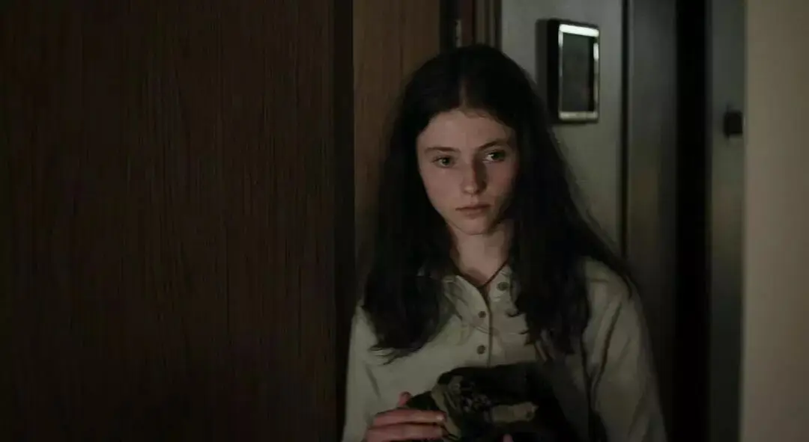
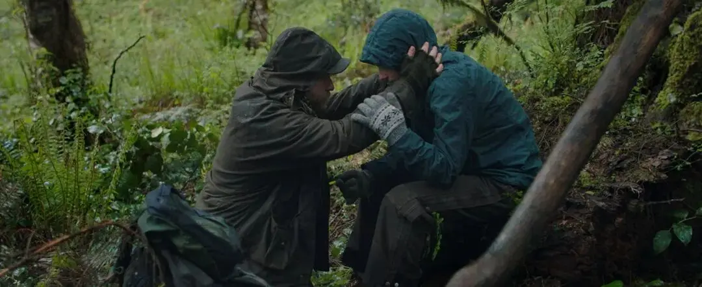
大片大片绿油油的森林里藏着一个受伤的“灵魂”和一个纯洁无暇的“精灵”，承载着人类极其复杂独特的情感。
所以我说这是一部很有灵气的作品。
有森林无人情也只是普通的自然纪录片，有人情而无森林则过于烟火气。
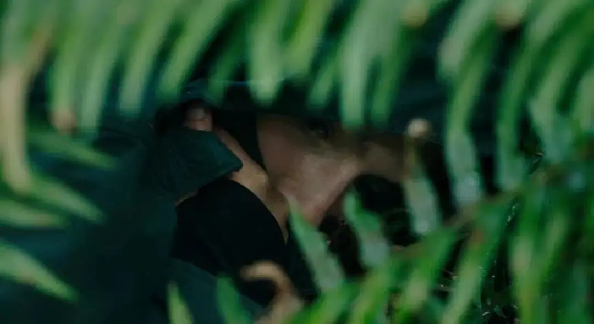
这个电影是不是让你想到了“采菊东篱下”的陶渊明。
当人们在满是罪恶、狡诈、无望的人类文明中受伤时，总是在大自然中能够得着某种自由和释放。
这种心态是非常普遍的，这背后藏着的是人类对于天堂和永恒的向往。
当人类因为犯罪被逐出伊甸园后，便一直在寻找回家的路。
所以，人类一直有两种追求。
一个就是造一座通天塔，欲自己做上帝主宰一切，人类通过科技、经济、政治等方式掌管一切，欲与天公试比高。
另一个追求就是乌托邦，中国大同社会、共产主义、唯科学主义等思想都想要打造一个人间天堂，虽然很多人都承认那是一种不切实际的理想主义，但并不影响人们乐此不疲心向往之。
这两种追求都是以一种强烈占有性的骄傲姿态对待世界，当这两个追求中上帝缺席时，某一些人的追求就会成为宇宙真理，进而吞灭、排除异己，自此酿造了很多人间惨剧。
当有人打着某种通天塔和乌托邦的旗号俘虏人心时，那往往不是天堂的翻版，而是真正的地狱。
当其中的受伤者放弃离开通天塔和乌托邦的梦想，以一种领受者而非占有者的心态来到大自然的面前时，的确会领略到上帝创造的奇妙和恩典。
但这有天堂的影子，并不是真正的天堂。
要真正重返伊甸园，人类除了领受上帝创造的“无字天书”——大自然，同时也要领受上帝的“有字天书”——《圣经》。
那里有真正医治的力量和通往永恒的奥秘，无数孤独症患者和抑郁症因此得到释放和平安。
因此，教皇保罗二世曾说：
信仰不应给从上帝存在的证据开始寻找，而是要对人类心灵深处彻底的孤独进行回应和反思。
这是极其智慧的，彻底的孤独是人的尽头，是对人造天堂和通天塔的彻底失望。
站在那个地方，人类有两个选择，要么仰望上帝，要么变得更加自我，直至自我毁灭。
威尔显然是自我放逐的后者，欲在大自然中悄无声息的存在，然后悄无声息的消失。
原著小说看的会更加压抑，改编的电影用父女之情适当转移了观众对威尔内心世界的关注和思考。
要不然，这部电影会非常绝望。
要让威尔从森林中走出来是非常难的，就是自己的女儿也没有办法做到。
威尔很极端么！
如果你想一想身边的人和自己，你会发现，这是相当普遍的。
身边总有一些亲戚或者朋友，因为过去被人伤害而变得非常自我，你要走入他们的世界很难，走进去要让他们出来看看其他的风景更是难上加难。
他们习惯住在黑暗的山谷里，习惯身处太阳永远都照不到的地方，他们拒绝敞开和信任。
即使是在教会里，当一些人在其中受伤后，可能会变得更加封闭，成为教堂角落里的边缘人，被孤独和不信任捆绑进而难以真正走入信仰。
这些我们都不需要回避，应该承认，虽自感无力仍然大声呼求。
这是避免走向自我放逐的第一步。
接下来，我们就应当时常回到上帝的创造中，回到上帝的话语里。
领受他的创造，领受他的救赎。
领受是回应孤独的最好方式，也是走入信仰的开始。
愿这个假期，每个人都能做个谦卑的领受者。
领受美丽的风景。
领受家人的陪伴。
领受独处的时光。
领受自己所拥有的一切和失去的一切。
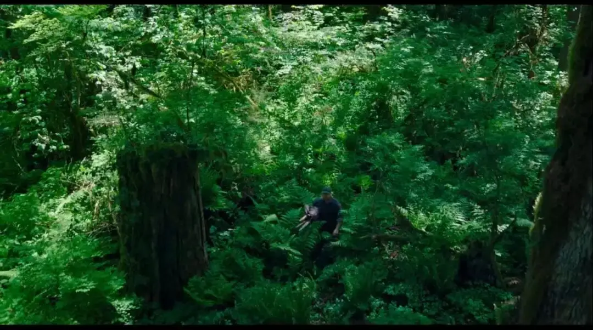

滑动下方区域
查看完整歌词
为你点首歌
▼
我漫无目的地游荡
这个世界 生机勃勃
我脑中的事物
如同红日落下般平静下来
哦 而我
我知道你必须要走
我想我也明白这缘由
但我不知为何
我仍然想着我们望着同一个月亮
同一片星空
你是否平安
而我们能否一同找到一个地方
用心感受
在这里
珍宝比比皆是
在其中我找到一片叶子 一首歌
从天而降
在树林里
秘密到处都是
在地方这么小
是我的一个家 一个梦
这儿会有一棵树
把我和你连接在一起
即使天各一方
我也相信我们正望着同一个月亮 同一片天空
这里没有挑逗你眼目情欲的小鲜肉
也没有挑动你肉体情欲的段子
更没有膨胀你今生骄傲的鸡血
我们只在乎那些最质朴真诚的作品
在那里我们才能恢复真正的想象力
我们也坚信这才是我们真正需要的

ID:Six_hundred_hits
长按二维码，一键关注
【六百击】
-END-
电影评论
尽情分享朋友圈

苹果打赏通道
小提示：文末广告是腾讯配送广告，内容与本号无关，但您的每次点击（无需反复点）都会给平台带来几毛收益，欢迎您点击支持六百击。